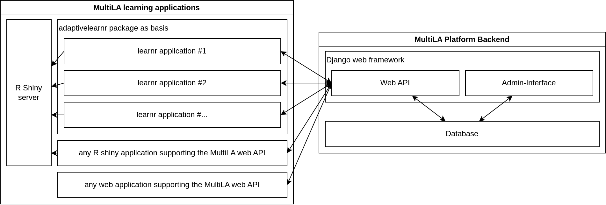

Software components¶
Overview¶
The following image show an overview of the MultiLA platform components:
the web API is central and provides a common platform for setting up client applications, configuring and sharing them, and tracking user data and feedback
all data – user generated or operational – is stored in the database
only the web API service has direct access to the database – client applications cannot access the database directly
for learnr based client applications, there is a package adaptivelearnr that provides all necessary (JavaScript) code to interact with the web API and to make client applications configurable
this allows to quickly create several client applications that share the same code for interfacing with the web API and that can be configured in some details (e.g. including/excluding certain sections, aesthetic changes, etc.)
the R Shiny server doesn’t communicate with the MultiLA web API, only the JavaScript code on the client side implements the communication
in general, any (web) application can use the MultiLA web API, which means for example R Shiny applications or Jupyter Notebook applications
it may be possible to connect external services for authentication (e.g. Moodle)